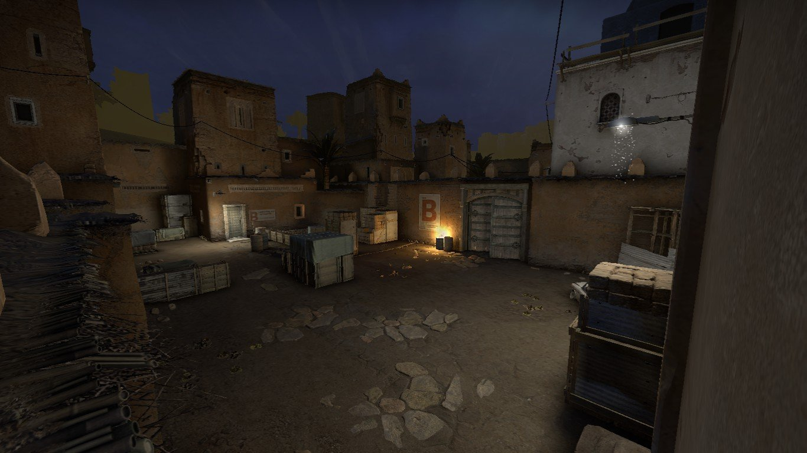

Навигация сайта:
В 2000 году VALVE, понимая какой успех получила Counter-Strike, решают сделать предложение Мину Ли и Джессу Клиффу, о покупке прав интеллектуальной собственности, от которого те не смогли отказаться.
В итоге все права на игру переходят компании, ребята становятся ее сотрудниками, а на свет появляется полноценная Counter-Strike 1.0. Затем, спустя почти год выходит версия 1.1. Забавный факт: между бетой 1.0 и полноценной 1.1 было 17 различных версий и несколько лет разработки, но только в версии 1.1 на AWP убрали прицел без зума.
Далее вышли версии: 1.3, 1.4, 1.5, и само собой всеми известная Counter Strike 1.6, которая и является последней версией первой игры.
Следующими играми в серии стали Counter-Strike: Condition Zero и Counter-Strike: Source, которые вышли в 2004 году. Но, по сути, ни та ни другая игра не являются прямыми продолжениями первой игры. Counter-Strike: Source–это больше ремейк, нежели полноценная игра, в котором оригинальную Counter-Strike перенесли на новый, одноименный движок Source. Да в игру внесли некоторые изменения, но все-таки назвать ее полноценным продолжением язык не повернется. И если в случае с Source все относительно просто, то с Condition Zero дела обстояли намного хуже.
Но в итоге игру доработали, и в 2004 году она все-таки увидела свет. А те 20 миссий, которые придумали Ritual Entertainment были выпущены в качестве отдельного дополнения Deleted Scenes.